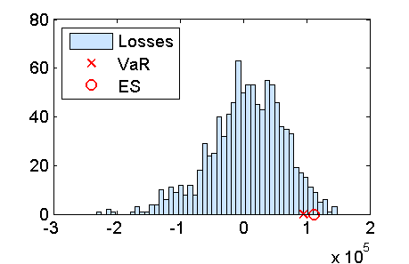

Contents
function demo_MonteCarloSimulationVaR
demo_MonteCarloSimulationVaR: Monte Carlo simulation for VaR
Load the data
S = load('closingPrices_IBM_GOOG_SI_2007_07_01_2013_06_30.txt');
Select data in the recent past
N = 500;
S_IBM = S(end-N:end,1);
S0_IBM = S_IBM(end);
S_GOOG = S(end-N:end,2);
S0_GOOG = S_GOOG(end);
Compute historical log returns for the specified time horizon (DeltaT)
horizon = 5;
indices = N+1:-1:horizon+1;
indices = indices(end:-1:1);
N = length(indices);
r_IBM = log(S_IBM(indices) ./ S_IBM(indices-horizon));
r_GOOG = log(S_GOOG(indices) ./ S_GOOG(indices-horizon));
Student's t fit for the marginals of the log returns
nu0 = 5;
[mu_IBM,sigma_IBM,nu_IBM,modelPdf_IBM,modelCdf_IBM,modelInv_IBM] = ...
fit2StudentT(r_IBM,nu0);
[mu_GOOG,sigma_GOOG,nu_GOOG,modelPdf_GOOG,modelCdf_GOOG,modelInv_GOOG] = ...
fit2StudentT(r_GOOG,nu0);
Local minimum possible. Constraints satisfied.
fmincon stopped because the size of the current step is less than
the default value of the step size tolerance and constraints are
satisfied to within the default value of the constraint tolerance.
Local minimum possible. Constraints satisfied.
fmincon stopped because the size of the current step is less than
the default value of the step size tolerance and constraints are
satisfied to within the default value of the constraint tolerance.
Gaussian copula for the joint distribution of log returns
u_IBM = modelCdf_IBM(r_IBM);
u_GOOG = modelCdf_GOOG(r_GOOG);
rho = corr([norminv(u_IBM) norminv(u_GOOG)]);
Portfolio composition
c_IBM_asset = 500;
c_GOOG_asset = 200;
c_IBM_call = 5000;
c_GOOG_asianCallAM = 2000;
Portfolio value at t0
Value of the European call option on IBM
r = 0.01;
T = 1;
K = 180;
nDaysInYear = 252;
sigma_IBM = 0.16;
payoff_call = @(ST)(max(ST-K,0));
price_IBM_call = priceEuropeanOption(S0_IBM,r,T,sigma_IBM,payoff_call)
price_IBM_call =
19.3279
Value of an Asian call option on the arithmetic mean of Google
N_AM = 6;
T = 0.5;
M_AM = 1e3;
K = 880;
sigma_GOOG = sqrt(nDaysInYear/horizon)*std(r_GOOG);
[price_GOOG_asianCallAM,stdev_MC] = ...
priceAsianArithmeticMeanCallMC_controlVariate(S0_GOOG,K,r,T,sigma_GOOG,M_AM,N_AM)
price_GOOG_asianCallAM =
43.2664
stdev_MC =
0.0605
Value of the portfolio at t0
P0 = c_IBM_asset * S0_IBM + ...
c_IBM_call * price_IBM_call + ...
c_GOOG_asset * S0_GOOG + ...
c_GOOG_asianCallAM * price_GOOG_asianCallAM
P0 =
4.5480e+05
Monte Carlo simulation
M = 1e3;
Simulate the log returns from the multivariate model
U = gaussianCopulaRand(M,rho);
simulated_r_IBM = modelInv_IBM(U(:,1));
simulated_r_GOOG = modelInv_GOOG(U(:,2));
Simulate the prices of the assets at t0 + DeltaT
simulated_ST_IBM = S0_IBM*exp(simulated_r_IBM);
simulated_ST_GOOG = S0_GOOG*exp(simulated_r_GOOG);
Simulate the prices of the derivatives at t0 + DeltaT
simulated_price_IBM_call = zeros(M,1);
simulated_price_GOOG_asianCallAM = zeros(M,1);
for m = 1:M
IBM: Call option
simulated_price_IBM_call(m) = ...
priceEuropeanOption(simulated_ST_IBM(m),r,T,sigma_IBM,payoff_call);
GOOG: Call on the arithmetic mean
simulated_price_GOOG_asianCallAM(m) =...
priceAsianArithmeticMeanCallMC_controlVariate...
(simulated_ST_GOOG(m),K,r,T,sigma_GOOG,M_AM,N_AM);
end
Simulated portfolio value at t0 + DeltaT
simulated_PT = c_IBM_asset * simulated_ST_IBM + ...
c_IBM_call * simulated_price_IBM_call + ...
c_GOOG_asset * simulated_ST_GOOG + ...
c_GOOG_asianCallAM * simulated_price_GOOG_asianCallAM;
Simulated losses
simulated_Loss = -(simulated_PT-P0);
Risk measures
p = 0.95;
VaR = quantile(simulated_Loss,p)
indexTail = simulated_Loss > VaR;
ES = mean(simulated_Loss(indexTail))
VaR =
9.5488e+04
ES =
1.1222e+05
Risk measures as a percentage of the current portfolio value
100*VaR/P0
100*ES/P0
ans =
20.9956
ans =
24.6748
Plot the results
figure(1);
nBins = 50;
hist(simulated_Loss,nBins);
hold on;
plot(VaR,0,'rx');
plot(ES,0,'ro');
hold off;
legend('Losses','VaR','ES',2);
